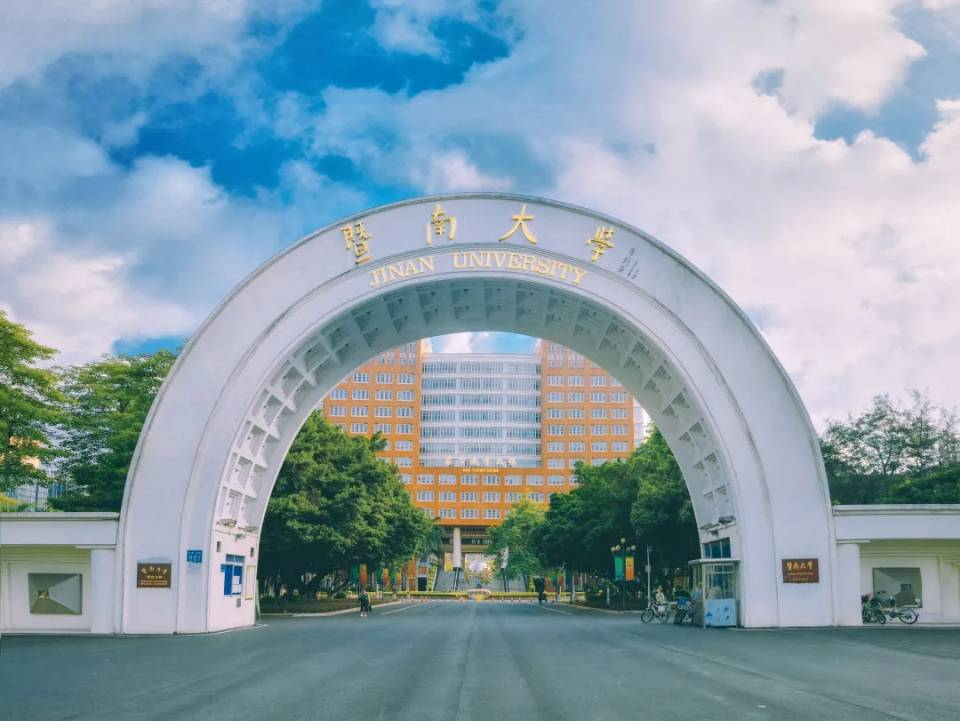
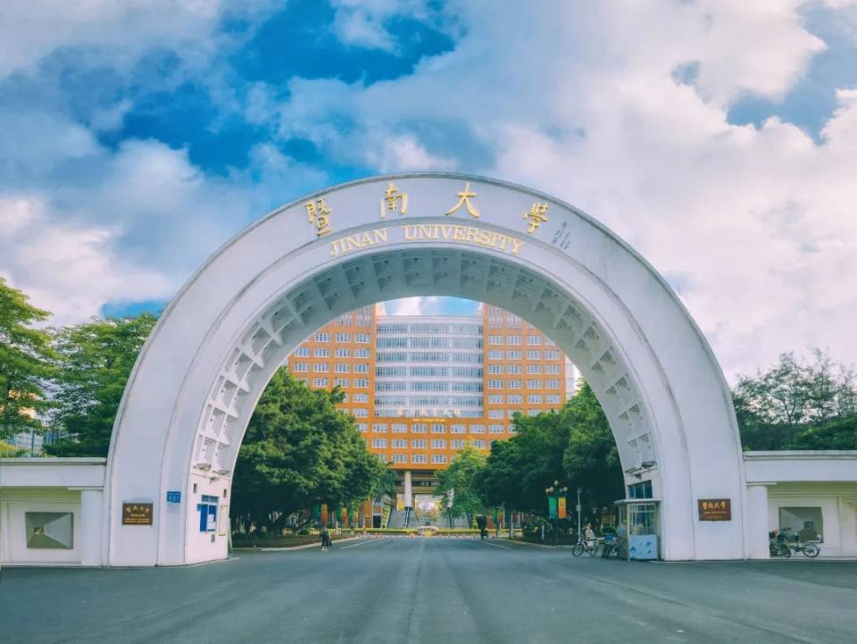

广告位招租1
广告位招租2
广告位招租3
广告位招租4
广告位招租5
广告位招租6
石牌校区
暨大最好的校区，基本都是研究生，对面就是华师，而且本部的图书馆超级人性化，服务特别棒，吃和玩的方面也是得天独厚，位于广州的商业中心-天河区，学校四周都是好去处
番禺校区
暨南大学番禺校区，校区环境优美，教学实验设备齐全，图书馆藏丰富，体育、活动和生活设施先进，管理完善、制度创新。按照暨南大学校区总体布局，番禺校区主要是发展外国语言文学、法学、政治学、体育学、药学、化学、生态学、材料科学、生物医学工程、食品科学、环境科学、数学、计算机科学、电子科学等学科、新兴交叉学科及管理学、经济学的本科教育。

华文校区
华文学院坐落在中国南方的国际大都市广州，毗邻港澳，交通便利。学院依山而建，环境幽雅，各种教学、生活设施齐备，是广大中国学生和华裔青年、外国留学生学习汉语和中国文化的好去处。学院拥有应用语言学实验室、多媒体教材制作室、语音实验室、图书馆等一批先进的教学设施；足球场、篮球场、羽毛球场、网球场、乒乓球室、健身房等健身场所；学生公寓、国际餐厅设施齐全、生活便利、安全卫生；多媒体教学办公校园网可随时与世界各地进行联系沟通。

珠海校区
珠海校区有人文学院、翻译学院、国际商学院、包装工程学院、智能科学与工程学院/人工智能产业学院、国际能源学院等6个专业学院，轨道交通研究院、物联网与物流工程研究院、先进与应用化学合成研究院、能源电力研究中心等多个研究机构，17个本科专业，涵盖文、经、管、法、工等学科门类，有社会学一级学科硕士学位授权点，国际商务、包装工程、智能信息处理、翻译学4个二级学科硕士学位授权点。翻译学获评“广东省重点专业”和“珠海市优势学科”，产品包装与物流实验室获批“广东省重点实验室”“珠海市重点实验室”，电气与智能控制工程技术研究中心获批“广东省工程技术研究中心”，包装工程获评“广东省高等学校战略新兴产业特色专业”和“珠海市优势学科”，信息安全、法学获评“珠海市优势学科”，法治化营商环境研究基地获评“珠海市重点研究基地”，轨道交通健康运营协同创新中心获评“珠海市协同创新中心”，少年家事法研究基地和国际商务研究基地获批“珠海市人文社科重点基地”。
深圳校区
暨南大学深圳校区于坐落在世界知名的旅游文化城区深圳华侨城，是暨南大学在深圳办学的基地，拥有境内首家通过世界旅游组织旅游教育质量认证的旅游学院，旅游管理专业是广东省高校名牌专业。 学院与美国宾夕法尼亚州立大学、加州大学河滨分校、佛罗里达大学、中佛罗里达大学、乔治华盛顿大学、天普大学旅游学院、杨百翰大学夏威夷分校、内华达州立大学拉斯维加斯分校，夏威夷大学茂宜学院，英国爱姆伍德学院、利兹贝克特大学，西班牙穆西亚大学，瑞士洛桑酒店管理学院，香港理工大学等院校建立了良好的合作关系，同时学院学生可申请前往美国、英国、法国、加拿大、丹麦、俄罗斯、日本、韩国等国家四十几所与暨南大学有合作关系的海外高校交换学习。